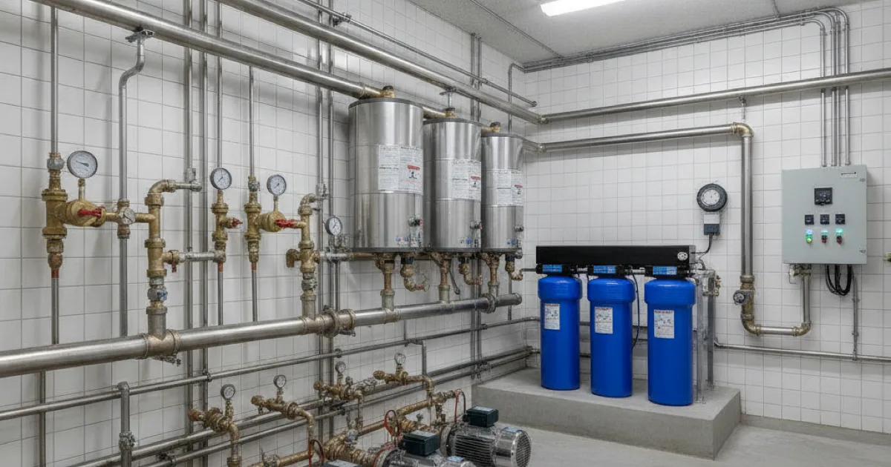
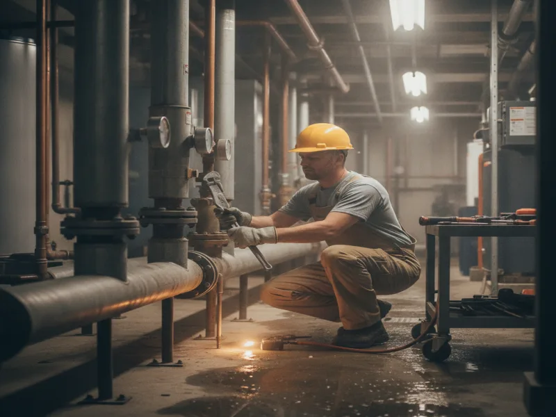

Commercial Plumbing Services in Armonk, NY
Running a small business doesn't leave much room for plumbing surprises. We work with offices, shops, and other small commercial properties around Armonk, with the same upfront pricing and clear communication you'd get as a homeowner.
- Residential & Light Commercial Plumbing
- Licensed & Insured
- Upfront Pricing
- Same-Day Service Available

What we offer commercial properties
We handle light commercial plumbing for offices, retail shops, and small professional buildings — the kind of properties that don't have their own maintenance staff on call. That includes fixture repairs and installs, drain and sewer issues, water heater work, and restroom upgrades like restroom fixture upgrades for your business.
We also handle annual backflow testing for your property, which many commercial properties are required to keep current, and keeping a commercial kitchen's grease trap clean for properties with a food service component.

Our process
We start with a call to understand what's going on and how it's affecting your operation. From there, we schedule a visit that works around your business hours when possible, since we know a plumbing crew in the middle of your lunch rush isn't ideal.
On site, we diagnose the issue, explain it in plain terms, and give you a clear price before starting any work. We treat a commercial visit with the same respect and communication as a residential one — no jargon, no pressure to approve work you don't understand.
Serving Westchester's small businesses
Armonk and the surrounding town centers — Pleasantville, Mount Kisco, Bedford, and the rest of our service area — are full of small, independently run businesses that need a plumber who understands commercial code requirements, not just residential fixtures. Commercial properties often have different backflow prevention, grease trap, and fixture code requirements than a house, and getting those details right matters for your inspections and your insurance.
The codes covering commercial plumbing installations are more detailed than most residential code sections, and we make sure any work we do for your property meets them.
What affects the cost
Commercial jobs vary more than residential ones, since every property's layout, fixture count, and usage level is different. A single-office suite with one restroom is a very different job than a multi-unit retail building with a shared kitchen.
We look at the scope of the work, any code requirements specific to your property type, and how quickly the issue needs to be resolved, then give you a clear number before we start.
When to call a pro
Call us for anything affecting your restrooms, kitchen plumbing, water heater, or drains — especially if it's slowing down your business or creating a health and safety concern for employees or customers. Commercial plumbing problems tend to get worse, and more expensive, the longer they sit.
If you're not sure whether something is worth a service call, describe what you're seeing and we'll help you figure out how urgent it is.
We handle homes just as often as businesses — see our residential plumbing services as well if you also need help at a property you live in, or see everything we handle for local properties for our complete service list.
Frequently asked questions
Do you work on commercial properties as well as homes?
Yes. We handle light commercial plumbing for offices, shops, and similar small properties, alongside our residential work.
Can you schedule work around our business hours?
We do our best to work around your operating hours so plumbing work doesn't interrupt your day any more than necessary. Let us know your constraints when you call.
Do you handle emergency plumbing calls for businesses?
Yes. A plumbing emergency at a business can mean lost revenue, so we treat those calls with urgency.
What size properties do you work with?
We focus on small commercial properties — offices, retail shops, and similar buildings — rather than large-scale industrial or multi-story commercial sites.
Do you provide documentation for commercial code compliance?
We can provide documentation of the work performed. Ask us about your specific compliance needs when you schedule.
Is pricing different for commercial jobs?
Pricing depends on the scope of the work, not whether the property is residential or commercial. You'll always get a clear price before we start.